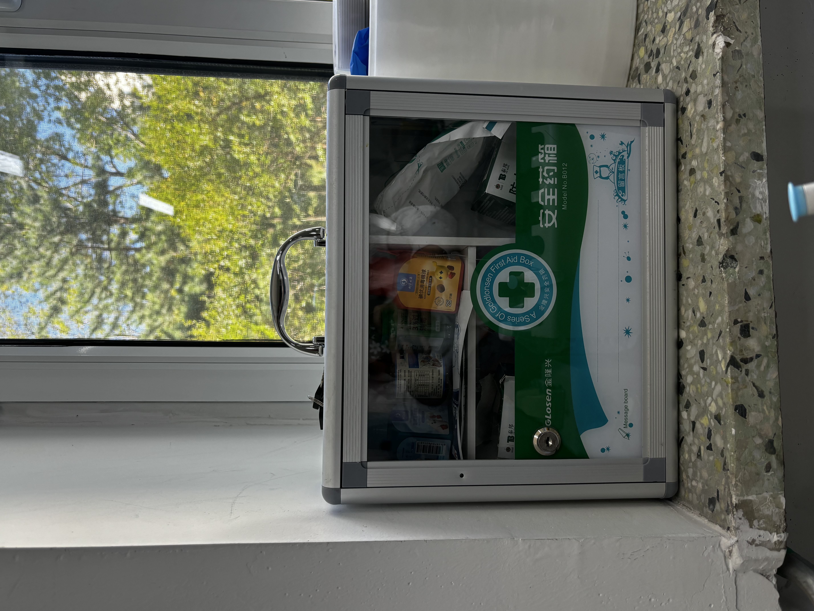
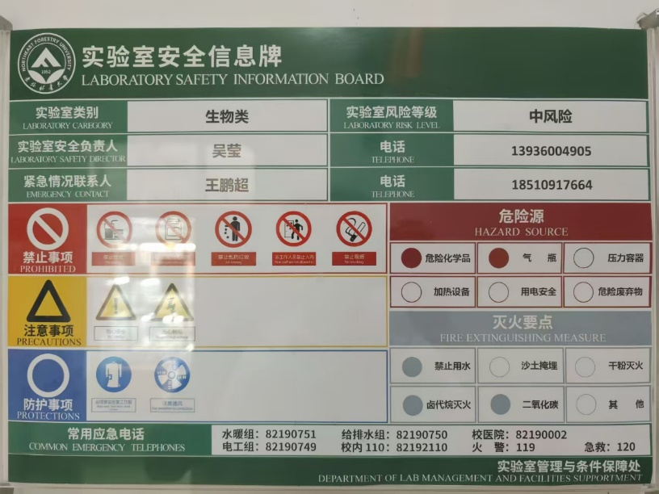
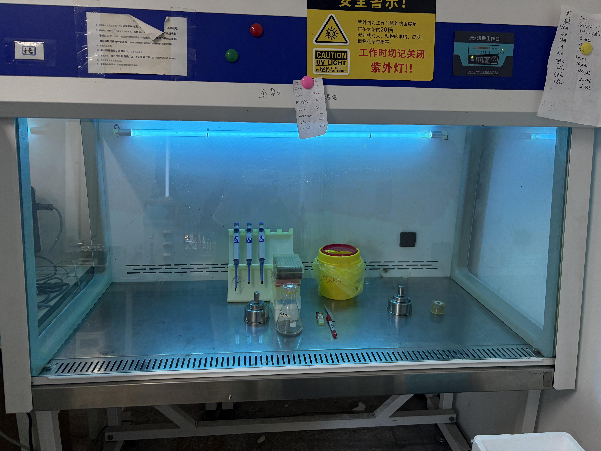
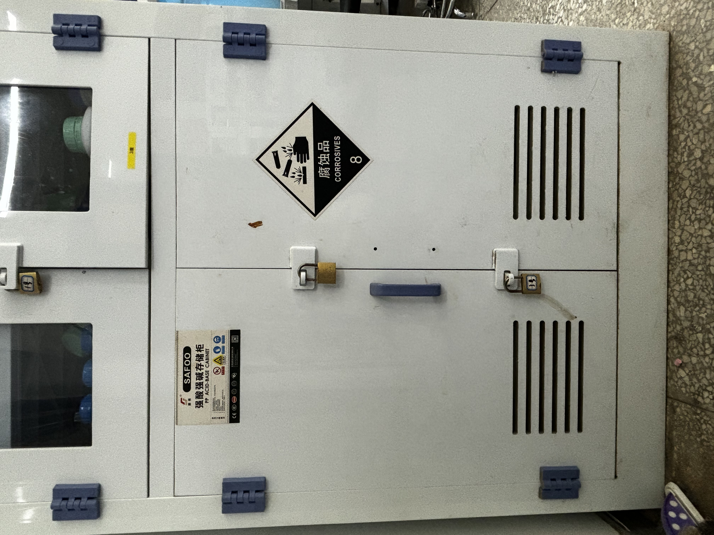
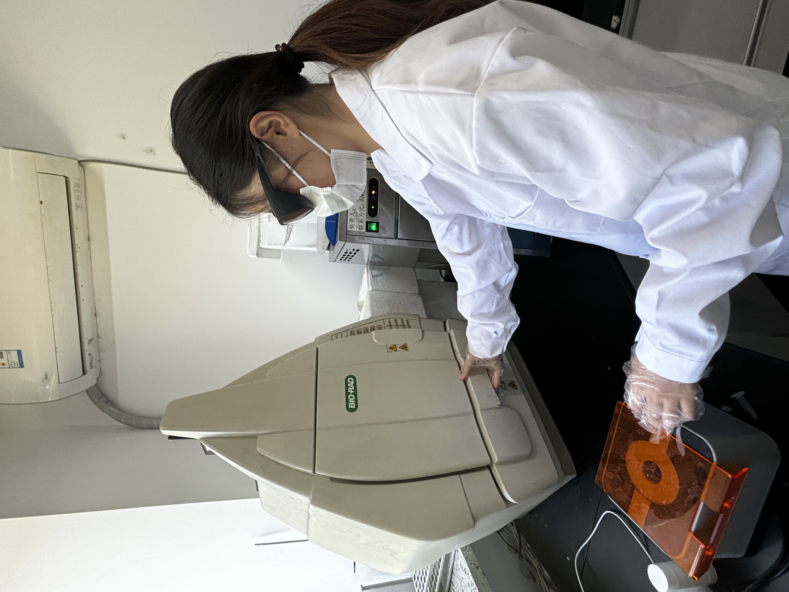
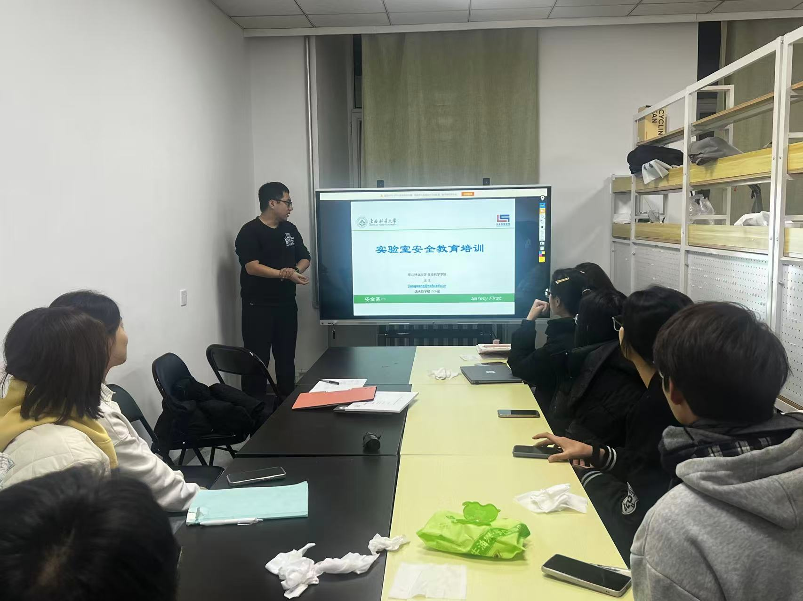
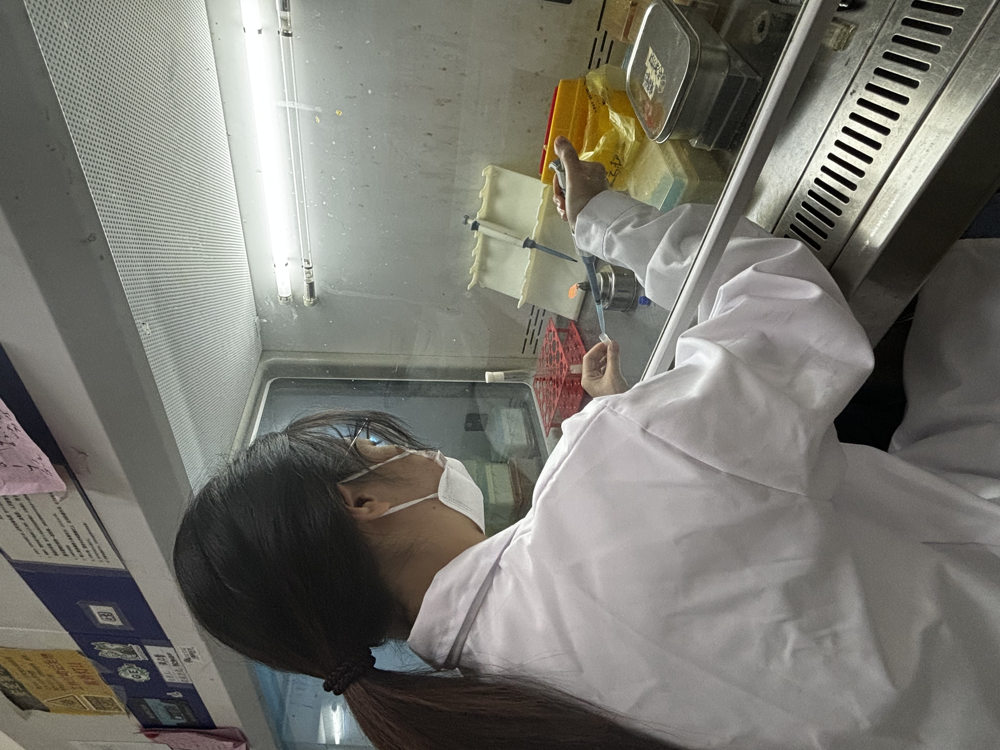

Prologue
Safety is one of the most noteworthy issues in experiments. Having a good experimental environment is a prerequisite for achieving ideal experimental results. Therefore, 2026 NEFU-China implements several laboratory criteria to ensure experimental safety and has always been practicing.
Safety in the Laboratory
All experiments in this project were performed in a BSL-1 laboratory equipped with complete emergency facilities, including first-aid kits, emergency showers, and eyewash stations, to fully protect laboratory personnel. We conducted daily safety inspections and regular comprehensive laboratory audits to maintain a stable and safe experimental environment.

A standardized laboratory waste disposal protocol was established for all experimental waste. All waste was classified, treated, and recycled in strict accordance with institutional safety regulations. Recyclable experimental materials were sterilized by high-temperature steam to eliminate residual contamination. Although the laboratory produces limited hazardous waste, hazardous chemicals including GelRed for nucleic acid staining and SDS for protein electrophoresis were exclusively handled in designated operational zones to avoid potential exposure risks.

Special independent experimental zones were designated for hazardous operations such as agarose gel electrophoresis. Since microbial cultivation was involved in our experiments, standardized aseptic operation procedures were strictly enforced. All culture media were autoclaved before use, and biosafety cabinets were UV-sterilized for more than 30 minutes prior to each experiment to guarantee a sterile operating environment.

All experimental chemicals were securely stored in classified reagent cabinets with clear and standardized labels for safe and standardized access. Regular chemical safety inspections were conducted to ensure reagent validity and laboratory safety.

All team members strictly followed unified laboratory management protocols. Personal protective equipment including lab coats, disposable gloves, and masks was mandatory during all experimental operations. Eating and drinking in the laboratory were strictly prohibited to prevent contamination and safety hazards.

Safety in Experiment
For biosafety compliance, only non-pathogenic Escherichia coli DH5α and BW25113 strains from the RR-approved safe strain list were used in this study.
Safety in Human Practice
All team members received systematic laboratory safety training and supervisor assessment before accessing the laboratory, ensuring full proficiency in standard operating procedures and emergency protocols.

During all experimental procedures, standardized PPE wearing and regular safety drills were consistently implemented to minimize potential risks and ensure overall laboratory biosafety.
